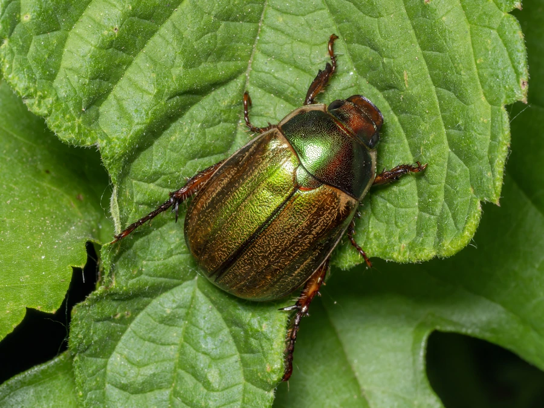

昆虫 · 动物界
铜绿丽金龟 Anomala corpulenta

体表呈铜绿色金属光泽的中型金龟，成虫啃食果树和阔叶树叶片，幼虫危害根部，是常见而危害严重的农林害虫。
- 分类
- 门节肢动物门纲昆虫纲目鞘翅目科金龟科属丽金龟属
- 栖息环境
- 果园、林地、苗圃与草坪，幼虫生活在土壤中
- 地理分布
- 中国大部分地区，朝鲜半岛和日本也有分布
- 保护级别
- 暂无评估；重要农林害虫
物种志
铜绿丽金龟成虫体长约 1.5–2 cm，体背铜绿色，具金属光泽，前胸背板和鞘翅颜色最深，鞘翅上有纵纹；腹面黄褐色，足粗壮，前足胫节有齿，前胸背板宽阔，鞘翅略短于腹部。
成虫昼伏夜出，有趋光性和假死性，取食苹果、梨、桃、杨、柳等果树林木的叶片，严重时把叶片吃成网状。幼虫称蛴螬，在土壤中取食植物根系和腐殖质，对苗木和草坪危害较大。铜绿丽金龟在中国分布很广，一年发生一代，以幼虫在土中越冬，春季化蛹，夏季成虫羽化。防治可利用灯光诱杀成虫、翻耕土壤消灭幼虫，以及使用白僵菌等生物制剂；果园中成虫大量出现时会造成明显的叶片缺损。
形态与习性
- 食性成虫啃食果树林木叶片；幼虫取食植物根系
- 体长成虫约 1.5–2 cm
- 生活史一年发生一代，以幼虫在土中越冬
- 习性昼伏夜出，有趋光性和假死性
- 危害成虫吃叶，蛴螬危害苗木根部和草坪
- 防治灯光诱杀、翻耕土壤、使用白僵菌等生物制剂
趣味知识
- 铜绿丽金龟的体表呈现铜绿色金属光泽，在阳光下很显眼。
- 它的幼虫就是土壤里的蛴螬，会啃食植物根部。
- 成虫有很强的趋光性，夏夜常被灯光吸引飞入室内。